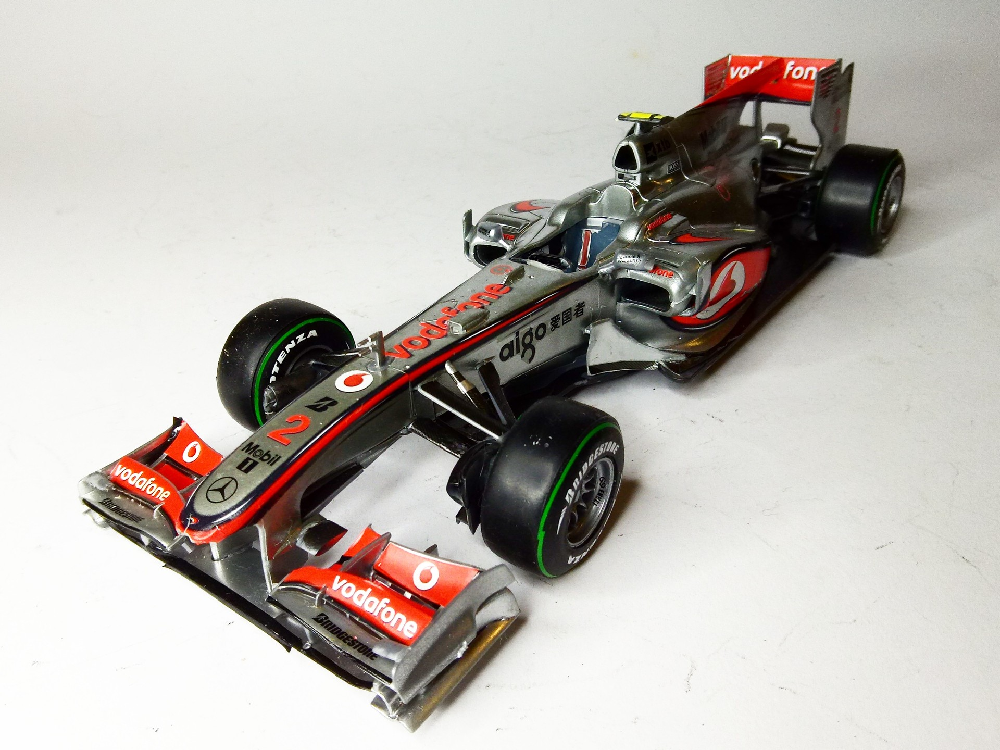
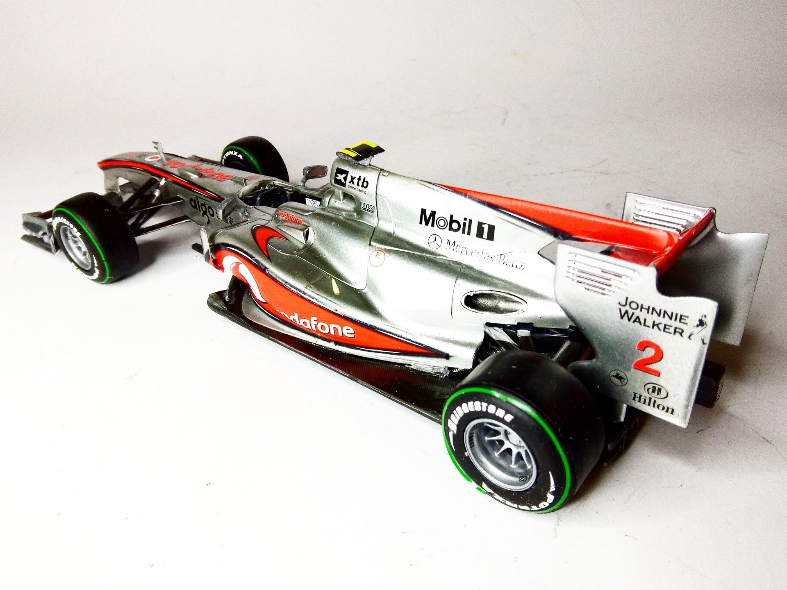

Auto e veicoli stradali · scale model archive
Mclaren Mercedes MP4-25
Mclaren Mercedes MP4-25 — Kit: Revell, Scale: 1/24. Raced in 2010 F1 championship season #1/24 #Revell #Mclaren #MP4-25

Photo gallery

English description
Raced in 2010 F1 championship season
#1/24 #Revell #Mclaren #MP4-25
Descrizione italiana
Corse nella stagione del Campionato di Formula 1 2010.